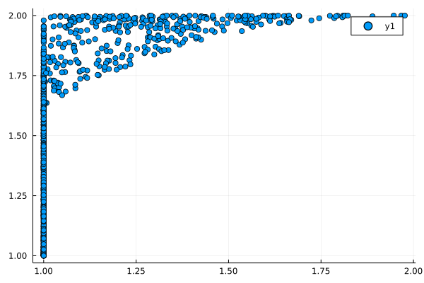
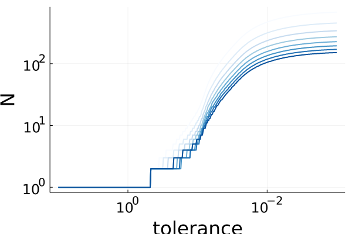
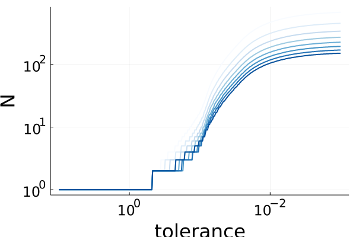

Recrating numerical results
Here we show how to recreate the results from the article.
$2\times 2$-matrices
This compares $\mu,\ \nu$ and $\bar \nu$ for $2 \times 2$-matrices.
using LinearAlgebra
using Plots
function nu(A::AbstractMatrix)
if maximum(diag(A)) == maximum(A)
return maximum(A)
end
w = A[2,1]
Anormalized = A / w
return w * det(Anormalized) / (sum(diag(Anormalized)) - 2)
end
nubar(A) = max(A[1,1], A[2,2], sqrt(A[1,2] * A[2,1]))
spectralradius(A) = maximum(eigvals(A))
N = 1000
nubar_by_nu = zeros(N)
mu_by_nu = zeros(N)
for n=1:N
random_numbers = rand(3)
A = [random_numbers[1] random_numbers[2]; random_numbers[2] random_numbers[3]]
nubar_by_nu[n] = nubar(A) / nu(A)
mu_by_nu[n] = spectralradius(A) / nu(A)
end
p = scatter(nubar_by_nu, mu_by_nu)
Simulations
The simulations in the paper are run with the following parameters.
maxN = 8
Niter = 10000
Nexpsp = 500
θs = Vector(0.2:0.1:.9)The below code recreates the plots, but with a lighter set of parameters.
using NuSynthesis
using GLPK
using Plots
Plots.scalefontsizes(2)
maxN = 6
Nas = 2 .^(1:maxN)
Niter = 10000
Nexps = 20
θs = Vector(0.2:0.1:.9)
data, dstatistics = gen_data(maxN, Niter, Nexps, θs, GLPK.Optimizer)
tolerance = 1e-3
p = plot(yaxis = "N", legend = :bottomright, color_palette = palette(:Blues_9), size = (600, 400))
plot!(p)
for θ ∈ θs[1:end]
plot!(p, Nas, (Na) -> first_until_tol(Na, θ, tolerance, dstatistics),
label = false, xaxis = "Na", linewidth = 2, marker = :x, markersize = 5)
end
savefig(p, "fix_tol.png")
Na = 2^maxN
p = plot(yaxis = "N", xaxis = "tolerance", color_palette = palette(:Blues_9), size = (600, 400))
plot!(p, xaxis = :log, yaxis = :log, xflip = true, legend = :topleft)
for θ ∈ θs[1:end]
plot!(p, 10 .^(1 .- (0:0.01:4)), (tolerance) -> first_until_tol(Na, θ, tolerance, dstatistics),
label = false, linewidth = 2)
end
p┌ Info: running experiments with
│ maxN = 6
│ Niter = 10000
│ Nexps = 20
└ θs = 8-element Vector{Float64}: …
┌ Info: Starting experiments with
└ Na = 2
11.980277 seconds (58.36 M allocations: 3.079 GiB, 6.52% gc time, 63.97% compilation time)
┌ Info: Starting experiments with
└ Na = 4
5.741818 seconds (46.44 M allocations: 3.268 GiB, 14.17% gc time)
┌ Info: Starting experiments with
└ Na = 8
9.879891 seconds (46.46 M allocations: 6.750 GiB, 17.82% gc time)
┌ Info: Starting experiments with
└ Na = 16
21.991771 seconds (46.55 M allocations: 19.249 GiB, 19.73% gc time)
┌ Info: Starting experiments with
└ Na = 32
30.103292 seconds (46.89 M allocations: 66.954 GiB, 7.53% gc time)
┌ Info: Starting experiments with
└ Na = 64
87.154082 seconds (56.25 M allocations: 253.081 GiB, 5.18% gc time, 0.00% compilation time) 
